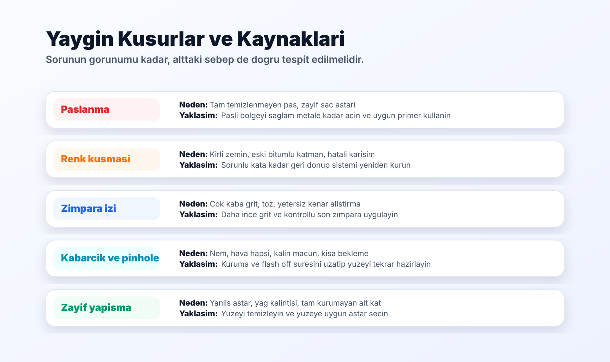
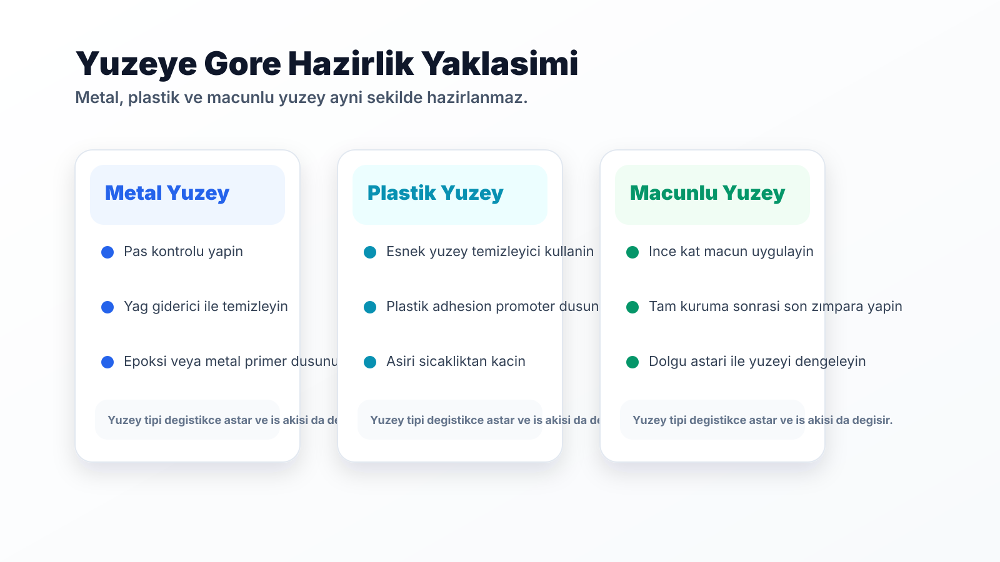

Hazırlık süreci neden kritik?
Oto boya uygulamasinda sonuc sadece son kat boyaya bagli değildir. Temizlik, yag giderme, pas temizligi, doğru zimpara ve uygun astar seçimi onceki katmanlari güvenli hale getirir.
Yüzey hazırlığı eksik kaldığında boya ilk anda iyi görünebilir; ancak zamanla paslanma, kabarma, renk kusması, zimpara izi veya zayıf yapışma gibi sorunlar ortaya çıkabilir.
Bu nedenle uygulama öncesinde yüzey tipini doğru okumak, doğru malzeme secmek ve ürün teknik föyune göre ilerlemek kritik avantaj sağlar.
Paslanma ve renk kusması
Metal yüzeyde pas tamamen temizlenmeden uygulama yapilmasi, ileride tekrar pas lekesi olusturabilir. Sac astarı kullanılmaması veya boya katlarinin çok ince uygulanmasi da korumayi zayıflatir.
Renk kusması ise eski kaplama, bitümlü pütür, kirli yüzey veya hatalı karışım kaynaklı olabilir. Bu durumda sorunlu kata kadar inilerek yüzey yeniden hazırlanmalıdır.

Zimpara izi, kabarcık ve pinhole
Çok kalın zimpara, yanlış makine kullanımı veya yüzeyde kalan tozlar son katta çizgi ve iz olarak görünebilir. Kenar alıştırma adımı bu nedenle atlanmamalidir.
Kabarcık ve pinhole problemleri genellikle nem, kirli yüzey, yetersiz dolgu astarı, hatalı macun karışımi veya kısa bekleme süreleriyle ilişkilidir. Sorunlu bölge temizlenip doğru katmana kadar zimparalanarak tekrar uygulanmalıdir.
Kenar izi, kabarma ve zayıf yapışma
Macun eski boyali yüzeye kontrolsuz tasarsa veya kenar alıştırmasi doğru yapilmazsa geçiş izleri oluşabilir. Uygulama öncesi yag giderme yapilmamasi da bu problemi buyutur.
Tam kurumamış yüzeye boya atmak veya katlar arası bekleme süresini yanlış ayarlamak kabarmaya yol açabilir. Plastik veya macunlu yüzeylerde uygun astar kullanılmaması ise zayıf yapışma riskini artırır.

Depolama ve karışım kaynaklı sorunlar
Boya, tiner, astar ve sertlestirici ürünleri uygun sıcaklıkta, kapaklari kapali ve raf ömrü kontrol edilerek saklanmalidir.
Ürün kalınlaşması, çokmesi veya homojen karışmaması uygulama kalitesini doğrudan etkiler. Şüpheli ürünlerde teknik bilgi formu ve uzman kontrolü dikkate alınmalıdır.
Doğru hazırlık; sadece uygulama kalitesini değil, iş tekrarını azaltmayı, zaman kaybını önlemeyi ve malzeme verimliliğini de destekler.